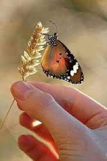
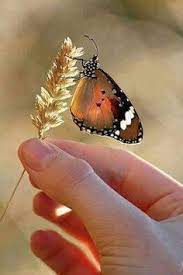

El ciclo de vida de las mariposas implica una metamorfosis completa (o sea, las etapas iniciales no se parecen en nada a las finales) y comprende cuatro etapas distintas, que son:
Los huevos de las mariposas, como los de otros insectos, son de pequeño tamaño y generalmente son depositados en racimo por la hembra, en una ubicación que varía según la especie. Algunas en plantas, rocas, en el suelo o incluso hay unas pocas especies que deben depositarlos en el agua, pues sus larvas son de vida acuática. Estos huevos eventualmente eclosionan, dejando salir una única oruga de cada uno.
Llamadas orugas, su función primordial es alimentarse y reunir los suficientes nutrientes para emprender el complejo proceso de metamorfosis que conduce a la adultez. Sus hábitos, morfologías y conductas pueden, sin embargo, variar enormemente con la especie. Algunas orugas son venenosas, otras poseen colores que imitan a los de las venenosas, algunas son voraces devoradoras de plantas y otras pocas prefieren diferentes alimentos.
Eventualmente, las larvas alcanzan el nivel necesario para emprender una etapa de profundos cambios, y para ello eligen una ubicación adecuada, tejen un capullo con materiales segregados por ellas mismas, y se encierran adentro durante la cantidad de tiempo necesaria para transformarse en mariposas adultas. A esta etapa se le conoce también como “pupa”. Imagos. Cuando la metamorfosis está terminada, el insecto adulto emerge de la crisálida rompiendo su corteza y esperando a que sus alas aún húmedas se expandan y sequen lo suficiente para emprender el vuelo. En esta fase de adultez, la mariposa cambiará radicalmente sus hábitos y modos de alimentación, y se dedicará a reproducirse para perpetuar el ciclo.
 
